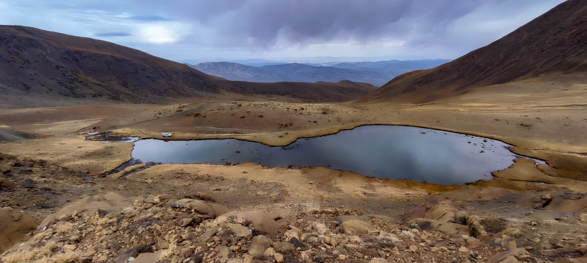
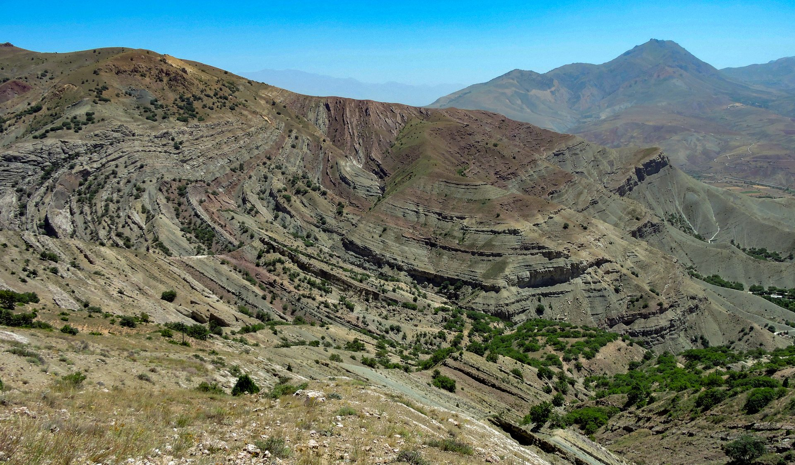
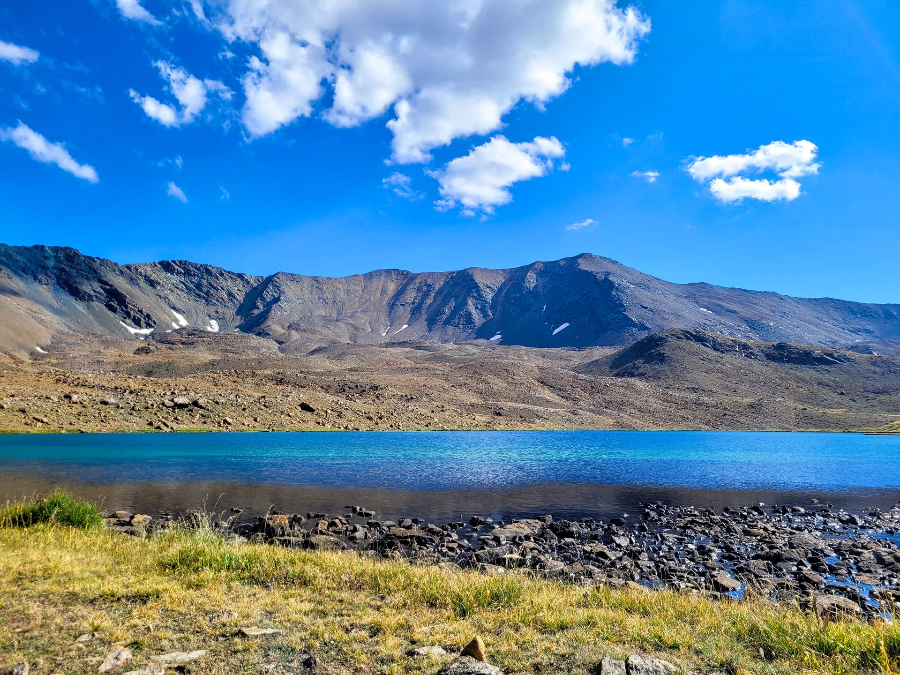

18 — 21 Haziran 2026

Jeolojik ve Kültürel
Mirası Çalıştayı
Binlerce yıllık jeolojik mirası keşfet
📍 Erzincan Binali Yıldırım Üniversitesi • Erzincan, Türkiye
Keşfet
Binlerce yıllık jeolojik mirası keşfet
📍 Erzincan Binali Yıldırım Üniversitesi • Erzincan, Türkiye

Erzincan, Kuzey Anadolu Fay Hattı üzerinde konumlanmış, Esence Dağları'ndan Munzur Sıradağları'na uzanan eşsiz bir jeolojik mirasa sahiptir. Bu çalıştay, jeologları, arkeologları, kültürel miras uzmanlarını ve araştırmacıları bir araya getirerek Erzincan'ın binlerce yıllık doğal ve kültürel zenginliğini keşfetmeyi amaçlamaktadır.
Dört günlük program boyunca saha gezileri, atölye çalışmaları, poster sunumları ve davetli konuşmacı oturumları ile katılımcılar, bölgenin jeolojik oluşumlarını, buzul göllerini, tarihi yapılarını ve kültürel dokusunu yerinde inceleme fırsatı bulacaklardır.
Disiplinlerarası bir yaklaşımla Erzincan'ın doğal ve kültürel mirasının farklı boyutlarını ele alıyoruz.
Alanında öncü akademisyenler ve araştırmacılar çalıştayımıza katkı sunuyor.





Dört gün sürecek yoğun ve verimli bir program sizi bekliyor.
Erken kayıt avantajından yararlanmak için formu doldurun. Kontenjan sınırlıdır.
Ön kaydınız başarıyla tamamlanmıştır. Detaylı bilgi ve onay e-postanız en kısa sürede iletilecektir.